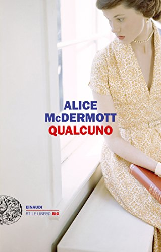

Qualcuno
(recensione di Manuela Fontenova)

Autore: Alice McDermott
Editore: Einaudi
Pagine: 264
Genere: Narrativa
Anno di pubblicazione: 2016
A primo impatto sono stata tentata di giudicare questo romanzo piatto, monotono e noioso.
Sembra non succeda mai niente ed ecco che invece, in quel niente succede tutto, succede una vita.
La vita di Marie, che conosciamo per la prima volta all'età di sette anni, seduta sulle scale di casa in attesa del papà.
Intorno a lei una popolare Brooklin degli anni '20, ragazzi in strada che giocano a calcio, mamme affaccendate in cucina, e tutta la sfilata di facce note che animano il quartiere, il povero Bill che i bambini hanno scelto come arbitro nonostante la sua cecità, Walter il ragazzo zoppo, Lucy la cicciona e non ultima Pegeen, personaggio buffo e insolito che ci intrattiene nelle prime pagine.
“A sette anni, ero una bambina timida e buffa a vedersi, con una faccia tonda e piatta e due fessure nere al posto degli occhi, occhiali spessi, la frangetta nera, una bocca diritta e seria: una bambina dei cartoni animati”
Accompagniamo Marie nelle fasi della sua vita, da bimba timida e paffuta con gli occhiali dalla montatura spessa, nella sua piccola casa medio borghese con la mamma irlandese, un papà che adora, e Gabe il fratello maggiore prossimo al seminario, ad una Marie giovane donna impiegata in un'agenzia di pompe funebri, poi sposa e madre ed infine anziana narratrice della sua semplice e modesta esistenza.
Attraverso una serie di flashback, che caratterizzano tutta la narrazione, l'autrice riesce a coprire un arco temporale molto ampio. Benché il libro sia diviso in tre parti, alle quali corrispondono tre diversi periodi, spesso questo alternarsi di anticipazioni e digressioni, crea qualche difficoltà nel collocare gli eventi nel giusto momento, ma nello stesso tempo spinge il lettore a cercare di colmare con l'immaginazione e con i fatti già raccontati, quei vuoti, che poi la narratrice stessa non manca mai di chiarire.
Come dicevo inizialmente, la sensazione è d leggere una storia piatta.
La vita di Marie procede tra alti e bassi, senza nessun evento particolare, senza nessuna passione travolgente, sempre al limite della soddisfazione.
Sembra esserci una serena accettazione della condizione che le è toccata.
Accetta di buon grado un corteggiatore che non avrebbe mai considerato, un lavoro che non voleva e un marito insperato.
Non è bella ma nemmeno brutta, intelligente ma nemmeno stupida. Ma davvero dobbiamo credere di poterla inquadrare così banalmente? Io penso di no: sotto un 'aria di rassegnazione, un'apparente modestia, si nasconde una donna dalle molte facce, sicura e ironica, che non mostra molto di sé probabilmente perché non sa che può farlo.
Stesso discorso per il fratello Gabe. Credo che se la McDermott lo estrapolasse dalla storia per farne un romanzo tutto suo, darebbe vita ad uno dei personaggi letterari più belli della narrativa contemporanea.
Osserviamo la vita di queste due persone da dietro una tenda, intravediamo solo le cose più ovvie, solo quello che la tenda ci fa vedere ma immaginiamo che se potessimo scostarla un po' la realtà sarebbe molto più ricca e densa di avvenimenti.
Sulla falsa riga della modestia e della superficialità la scrittrice tratta temi molto importanti, dalla guerra all'omosessualità, senza approfondire o concentrarsi su nessuno.
Al contrario c'è una grandissima cura nelle descrizioni degli ambienti, soprattutto quelli chiusi, come cucine o camere, in cui ci viene riportata l'esatta collocazione di arredi e mobilio, quasi fosse indispensabile riuscire a figurarsi i luoghi in cui i svolgono i fatti.
Non riuscivo ad entrare nella storia, perché mi sono avvicinata alla lettura, avendo come modello due romanzi che ho molto amato e che sono dei romanzi corali ma anche di formazione: “Un albero cresce a Brooklyn” di Betty Smith e la spassosa serie di Agnes Browne di Brendan O'Carrol.
Pensavo che avrei trovato la stessa verve ed intensità e quando ho capito che non sarebbe stato così ho avuto un piccolo blocco. Sono dovuta arrivare quasi alla fine per apprezzare appieno questo raffinato romanzo, e capire che l'effetto quasi “noioso” e la narrazione sottotono sono voluti dall'autrice.
Il romanzo è stato concepito così e richiede al lettore lo sforzo di comprenderlo e prendersi del tempo, letta l'ultima parola, per riflettere ed assaporare a bellezza e l'eleganza di una scrittura di alto livello.
L'AUTORE - Alice McDermott è nata a New York e vive con la famiglia nei pressi di Washington. Oltre a Qualcuno (finalista del Nationl Book Critics Circle Award) ha scritto altri sei romanzi, fra cui Il nostro caro Billy, vincitore nel 1998 del National Book Award. Dopo tutto questo (2009), Una cosa difficile come l'amore (2008) e At weddings and Wakes sono stati finalisti del Premio Pulitzer.